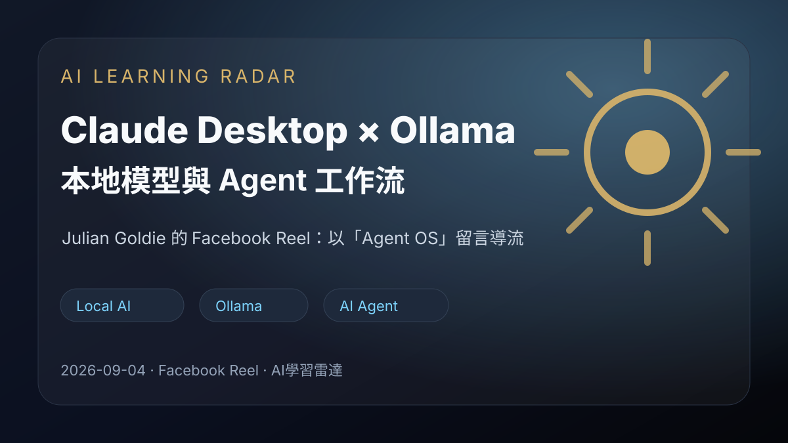
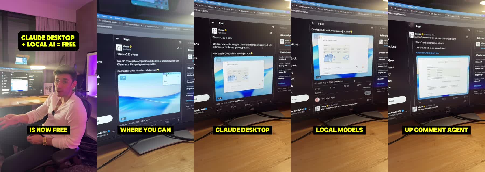

Facebook Reel｜Julian Goldie：Claude Desktop 串接 Ollama 本地模型與 Agent OS 導流案例

一句話摘要
Julian Goldie 的 Facebook Reel 介紹把 Ollama 本地模型接進 Claude Desktop 的桌面工作流，主張可用本機模型保留更多隱私、降低雲端依賴，並把流程導向留言「Agent OS」索取完整教學。這則內容值得收進 AI 學習雷達，作為「Claude Desktop + Ollama + local models + AI agents」的入門線索與短影音導流案例。
來源脈絡
- 來源：Facebook Reel「Julian Goldie」。
- 分享連結：https://www.facebook.com/share/r/1CPvABPEkY/?mibextid=wwXIfr
- Canonical：https://www.facebook.com/reel/2080204132597258
- yt-dlp 解析頁面：https://m.facebook.com/watch/?v=2080204132597258&_rdr
- 影片長度：約 19.7 秒。
- 可見互動：Facebook Open Graph 顯示約 5.3 萬次觀看、403 個心情；yt-dlp metadata 擷取時顯示約 21,729 次觀看。社群平台計數會隨時間與入口不同而變動。
可見貼文文案重點
貼文主張「Claude Desktop now free forever」的角度，是把 Ollama 提供的本地模型接進 Claude Desktop／桌面工作流：
- 使用 local AI models。
- 讓推論與工作流更偏向在自己的電腦上執行。
- 保留更多本地隱私與控制權。
- 把模型接到 AI agents、自動化流程與桌面工作流。
- CTA：留言「Agent OS」索取完整 guide。
影片內容重點（ASR 摘要）
- 影片說明 Claude Desktop 可以透過 Ollama 插入 local models。
- 這讓使用者能在 Claude Desktop 中搭配本地模型使用，而不是每次都依賴雲端請求。
- 片尾導流：想取得完整系統與設定教學，就留言 Agent OS。
畫面證據

判讀重點
### 可確認
- 這是一則「Claude Desktop + Ollama + local models」的 AI 工具／工作流短影音。
- 主要價值在提醒：本地模型可與桌面代理、自動化流程整合，對隱私、離線/低雲端依賴、成本控制有討論價值。
- CTA 採留言關鍵字「Agent OS」導流，應把它視為行銷漏斗入口，而不是完整公開教學。
### 需要保留疑問
- 「free forever」是短影音標題式說法；實務上仍要分清 Claude Desktop、Ollama、本地硬體、模型授權與雲端 Claude 服務的邊界。
- 影片沒有公開完整設定步驟，也沒有清楚列出使用的是哪一套 Agent OS／本地整合架構。
- 如果要落地測試，仍需確認 Claude Desktop 是否支援該工作流、模型效能、上下文長度、MCP/工具調用安全性與資料流向。
可延伸研究方向
- Claude Desktop 搭配 MCP server、Ollama/OpenAI-compatible local endpoint 的可行性。
- 本地模型在 agent workflow 中適合承擔哪些任務：草稿、分類、RAG、工具調用前處理、批次整理等。
- 本地 AI 的安全邊界：哪些資料可以留在本機、哪些 API key/檔案路徑不該直接暴露給模型。
- 「留言關鍵字索取教學」類 AI 社群內容，如何判斷是有價值的教學入口，還是純導流素材。
收進知識庫的理由
這則內容雖然是短影音導流，但題材直接連到 Claude Desktop、Ollama、本地模型、AI Agent 與自動化工作流，是 AI 學習雷達值得追蹤的「local-first agent workflow」線索。後續若要實作，可再補一篇可重現的 Hermes／Claude Desktop／Ollama 本地代理設定筆記。
ASR 逐字稿節錄
以下為 Whisper base 對影片音訊的自動轉錄，可能包含專有名詞或斷句錯誤，僅作內容證據參考：
> Claude desktop. It's now free forever. Here's how so a Lama have set up a system where you can plug in local models directly into Claude desktop, which means that you can use Claude desktop for free forever with local models. If you want to get the full system on the how to use it and set it up come in agent OS and I'll send it to you.
原始連結
Facebook 分享連結：
https://www.facebook.com/share/r/1CPvABPEkY/?mibextid=wwXIfr
Facebook canonical：